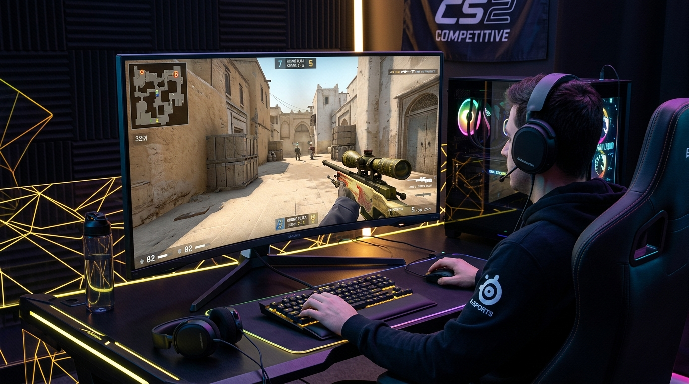

Valve, Counter-Strike 2 (CS2) ile birlikte yılların CS:GO efsanesi olan "Tickrate" altyapısını çöpe atıp yerine Sub-Tick adını verdiği yeni bir mimari getirdi. Bu yeni sistemin amacı mermilerin tam olarak tıkladığınız milisaniyede gitmesini sağlamaktı. Ancak bu durum, internet bağlantısı kusursuz olmayan oyuncular için pingi eskisinden çok daha kritik bir hale getirdi.
Sub-Tick Neden Düşük Ping İster?
Eski sistemde sunucu her şeyi 64 eşit parçaya bölerek (64 Tick) hesaplıyordu. Yeni Sub-Tick sisteminde ise sunucu, sizin mouse'a tıkladığınız "zaman damgasını" (timestamp) sunucuya iletir. Eğer pinginiz yüksekse, sizin tıkladığınız bilginin sunucuya gitmesi gecikir, sunucu geçmişteki o anı işlerken rakibiniz çoktan pozisyon değiştirmiş olabilir. Bu da CS2'de meşhur "duvar arkasında vurulma" (Peeker's Advantage) sendromuna yol açar.
1. Maksimum Kabul Edilebilir Eşleştirme Pingi Ayarı
CS2'de yapmanız gereken en hayati ayar budur. Oyunu ilk kurduğunuzda bu değer 150 ms gibi çok yüksek bir rakamda olabilir. Bu da oyunun sizi maç bulsun diye Rusya'nın en uzak sunucularına atmasına sebep olur.
2. Gecikme Telefisiz (Lag Compensation) Oynama
Eğer Wi-Fi kullanıyorsanız CS2 oynamanız adeta bir çileye dönüşecektir. Sub-tick sistemi paket kayıplarına (packet loss) karşı aşırı hassastır. Odanız ne kadar uzak olursa olsun, gerekirse duvar kenarlarından kablo çekerek mutlaka CAT6 Ethernet Kablosu ile bağlanın.
3. NVIDIA Reflex Düşük Gecikme (Low Latency)
Sadece internet pingi değil, bilgisayarınızın donanım gecikmesi de Sub-Tick için önemlidir. Ekran kartınız NVIDIA ise, CS2 Görüntü Ayarları menüsüne girip NVIDIA Reflex Low Latency ayarını Açık + Takviye (On + Boost) konumuna getirin. Bu, mouse tıklamanızın işlemciden geçip internete yollanma süresini (Input Lag) minimuma indirecektir.
4. Arka Plan Bant Genişliği Kısıtlaması
Steam arka planda Workshop (Atölye) haritalarını veya başka oyunları güncellerken CS2'ye girerseniz pinginiz tavan yapar. Steam Ayarları > İndirmeler bölümünden Oyun Oynarken İndirmelere İzin Ver seçeneğinin kapalı olduğundan kesinlikle emin olun.